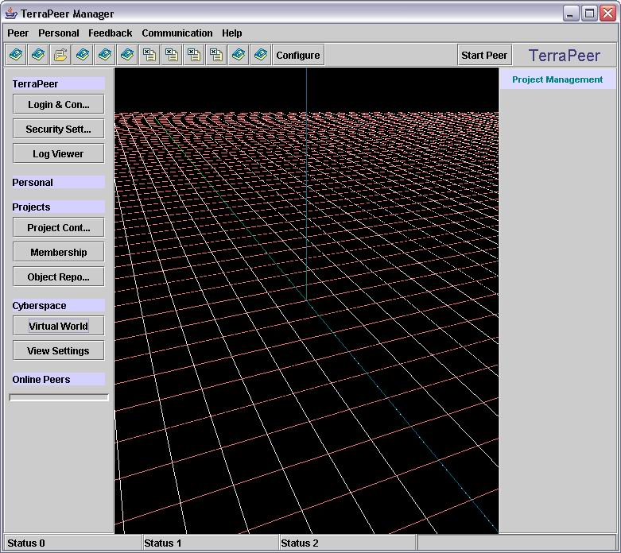
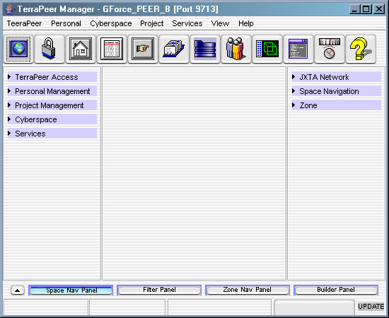
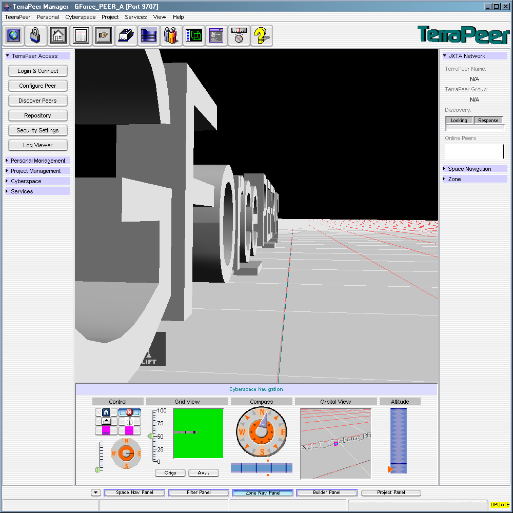
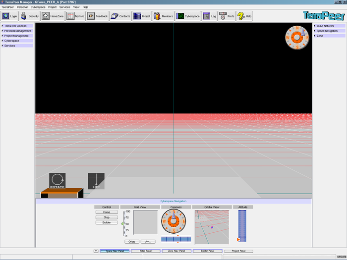
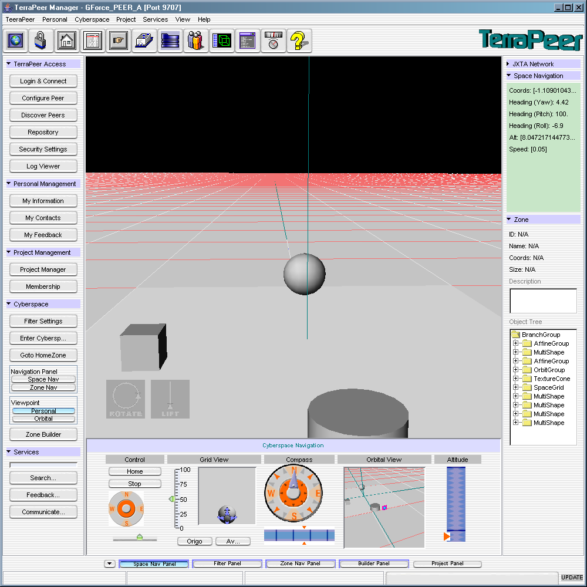
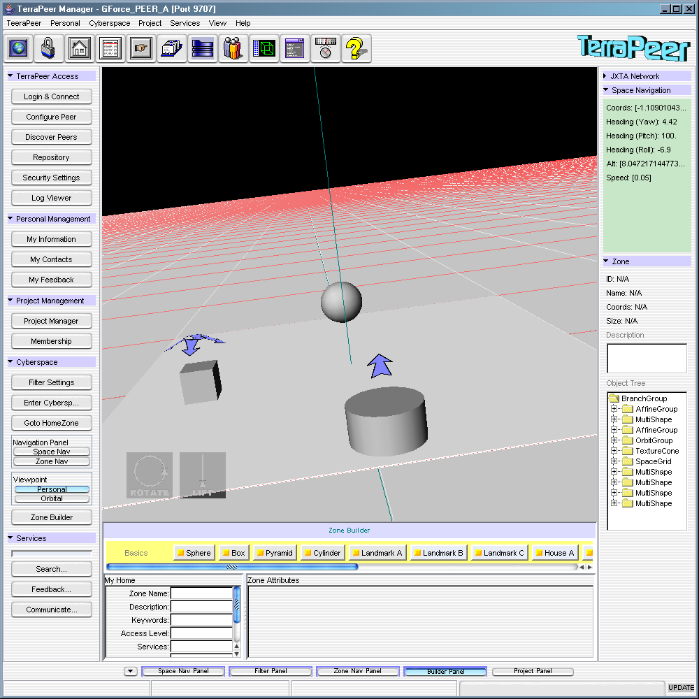
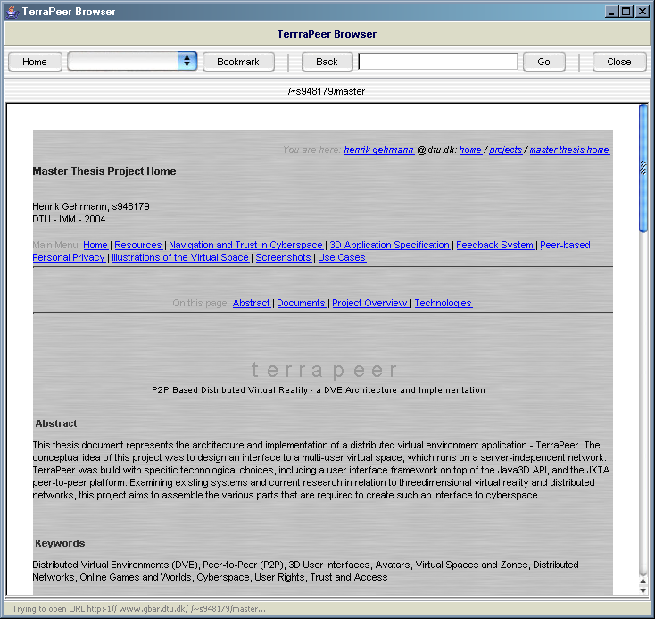
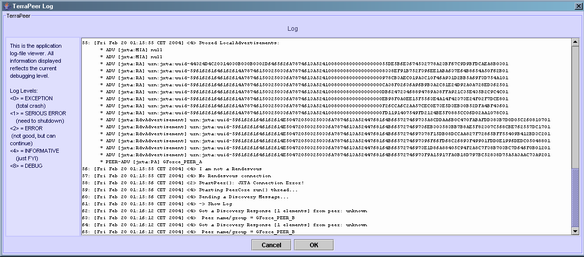
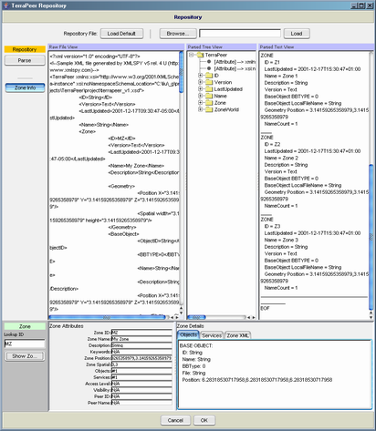

You are here: terrapeer.dev.java.net / Sceenshots
Main Menu: Home | Project Overview | Resources | Screenshots
On this page: Latest Screenshots
Please note that the screenshots might look more advance than the actual application
;-)
The main application window with a basic Grid for the virtual environment:
Version 0.5

Version 0.8

The 3D viewer enabled with Navigation Southpanel

Fullscreen View

Objects on a Zone

Viewer with Zone Builder Southpanel

The build-in Web Browser

The Log window

The XML Repository window

Maintained
by Henrik Gehrmann (c) 2004
Last Edited
July 5, 2004